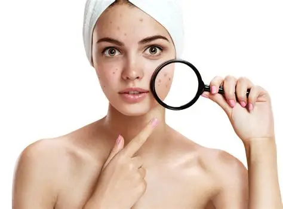
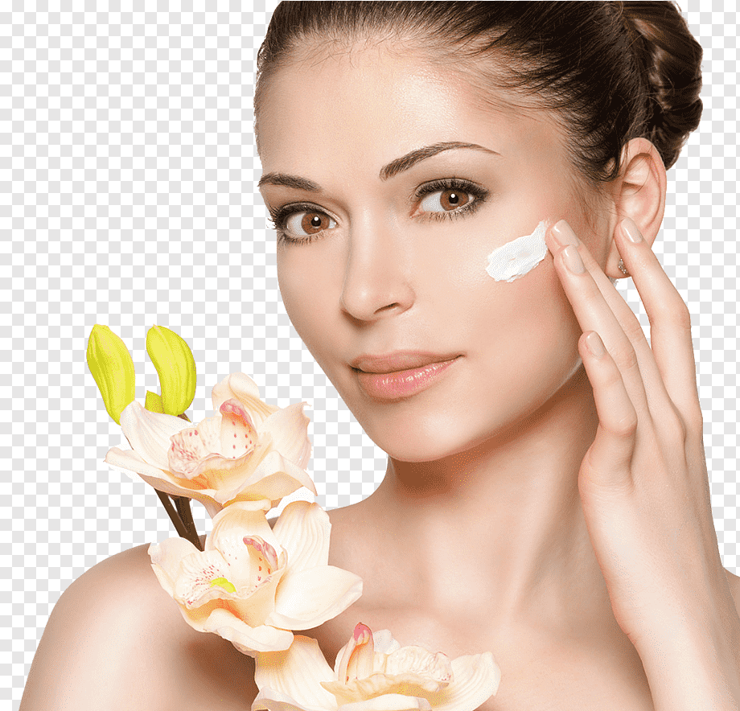

BEM-VINDO
Sua beleza Natural
Sua beleza Natural
Realçada
Especialistas em realçar sua beleza natural com tratamentos premium.
Descubra Mais

QUEM SOMOS
Amor próprio e confiança em cada detalhe.
Acreditamos que sua saúde da pele é o primeiro passo para a autoconfiança. Nossa missão é oferecer resultados naturais e duradouros, tratando cada paciente como unico.
10+ Anos
15+ Serviços
99% Satisfação
NOSSOS SERVIÇOS
Tratamentos sob medida
Terapia Anti-Idade
Bioestimuladores técnicas para preservar a firmeza e contorno facial.
Saber Mais →